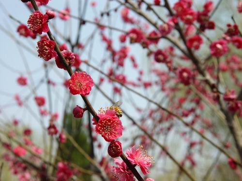

南京梅花节 @ Mar 20, 2005
早早赶到梅花山，却见到一个赶庙会的场景。原来那个大草坪已经被黑压压的人群和各种游乐器具摆满，满世界的人、满世界的小摊子、满世界的方言...实在是恐怖！阳光灿烂的时刻只有梅花在一片浮躁声中恬静而自我的开放。



早早赶到梅花山，却见到一个赶庙会的场景。原来那个大草坪已经被黑压压的人群和各种游乐器具摆满，满世界的人、满世界的小摊子、满世界的方言...实在是恐怖！阳光灿烂的时刻只有梅花在一片浮躁声中恬静而自我的开放。

« 茉莉芬芳 | 《Songs about Jane》...... »
8 Responses to “南京梅花节”
2005-03-20
以前每年都会去，人虽然多，但是幽幽的梅香总是足够吸引人。
之后走到紫霞湖畔，感受温暖的阳光，很舒服的日子。
今年不去了，天气也没那么好的
2005-03-20
呵呵,今晚在小王的婚礼上看到你,本准备打个招呼,后来一想,你又不认识我,太唐突,就算了.
2005-03-20
你选择一个大家都去的地方，在一个大家都去的日子，当然就会遇到大家了。人类的想法行为大致上一样，不然就不成其类，而那些反其道而行之的少数也不会被称为“另类”了。
2005-03-20
中国有很多人烟稀少的去处，尽管有十几亿人口。
2005-03-21
上周末去了广州的白云山。 虽然没有水， 但是明显看得出，比南京的草绿很多。
周末，沿着上路往上爬，愉悦身心。 总结经验，早一点去就行了。
2005-03-21
在假日的时候出去踏青,那个什么青年旅社怎么没有听说过?
2005-03-22
hello.
it's my first time to leave words here after when i just have seen all your diary....
that's great... especially the experience in Europe...
before i read every diary..just a feeling seems to be in the Europe..
i like this feeling....like your words...
i'm just a student with talking a tender english....
i wanna to know more about this....
can i have your E-mail or icq ........
if so thanks very so mush..
2005-11-26
你好
我是台灣新竹清華大學資工所的學生
我現在在做一個網頁
是我們系上舉辦的高中資訊學科競賽的網頁
因為我們的校花是梅花
所以我想借用你在南京梅花節拍的那張梅花照片當作首頁
我覺得拍得非常好 希望能將照片借我使用
我會在上面加上你的名字的
不知道你願不願意?
請聯絡我 謝謝!
Leave A Reply
存档只读，评论已关闭。